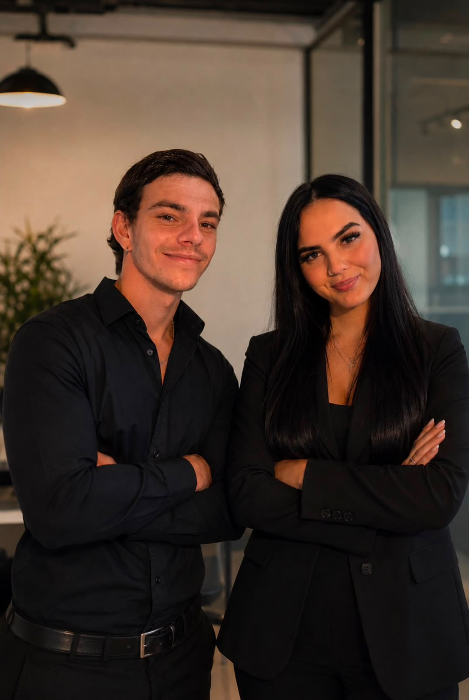

About Coastline Creative
Content people actually want to watch.
We started Coastline Creative because we have a real passion for creating content and helping businesses stand out online — and because there's far too much boring content out there.
Our Story
Every brand, business and car has a story. Our job is to tell it properly.
At Coastline Creative, we don't just make content — we create videos and photos that people actually want to watch. We believe every brand, business and car has a story to tell, and our job is to bring that story to life in the best way possible.
We focus on quality, creativity and making sure every project looks professional while still feeling real. Whether it's social media content, promotional videos, photography, or working with cars, we put our full effort into every shoot. We don't believe in cutting corners or giving clients something "good enough."
Mission
Content that helps you grow
For us, it's not just about getting the job done. It's about building relationships with our clients, understanding what they want, and creating content that actually helps their business grow.
Vision
Set the standard for what content can be
There's so much boring, forgettable content out there. We want Coastline Creative to be the studio that proves photography and video can be quality, creative and still feel completely real.
Approach
Always learning, always improving
We're always learning, always improving, and always looking for new ways to create better content than we did yesterday. Every shoot is a chance to raise the bar.
What We Stand For
Our values
Quality over quantity
We'd rather deliver one shoot we're proud to put our name on than ten we're not. Every frame gets our full attention.
Creativity with purpose
Good content doesn't happen by accident. We bring ideas, not just a camera, to every project we take on.
Honest relationships
We take the time to understand what a client actually wants before we shoot a single frame — no guesswork, no assumptions.
Growth, always
We're never satisfied with "good enough." Every shoot is a chance to learn something and do it better next time.
The Founders
Built by two people who care about the work
Coastline Creative is run hands-on by its two founders — every project passes through both of them, start to finish.

I started Coastline Creative because I love turning ideas into content that people actually connect with. Every project is an opportunity to create something unique, and I take pride in making sure every client walks away with content they're genuinely proud of. Quality will always come first.
Great content does more than just look good — it builds trust, captures attention and creates opportunities. I founded Coastline Creative to help businesses tell their story through premium visuals, creative strategy and content that delivers real results. For me, every project is about more than videos or photos — it's about building brands that people remember.
Work With Us
Ready to tell your story?
Get in touch and let's talk about what we can create together.
Start a Conversation